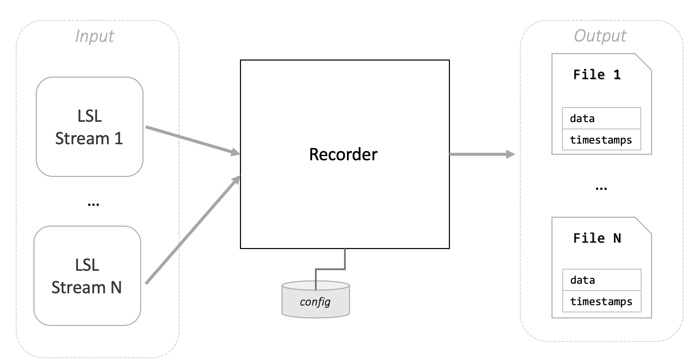
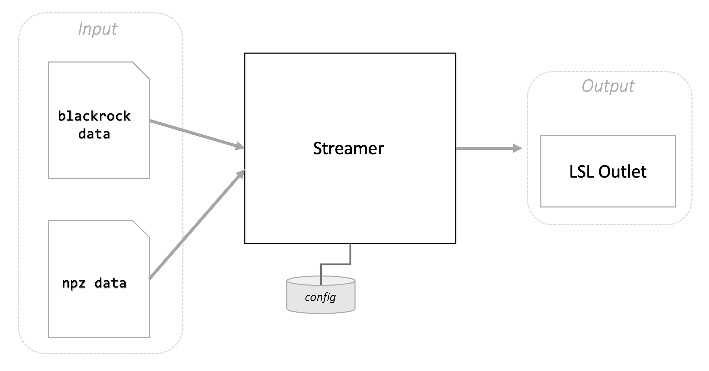

Recording and Streaming
NDS provides two utilities, a recorder and streamer, which can be used together with the NDS main components to help your development and debugging. The recorder can be used to save data from LSL streams to a file. The streamer can be used to transmit the content of a file to an LSL stream.
Recorder
This script can be used to connect to LSL streams and save the data with timestamps to a file.

The recorder is useful for capturing one or multiple streams for offline analysis or replay. It’s meant for short sessions (minutes) as it stores all data in memory and writes it to disk at the end of the session.
The recorder accepts the following arguments:
--recording-time: the duration of the effective recording in seconds. The timer starts when all the streams are connected.--session: a given name for the recording session. This will be used to name the output files.--lsl: a comma separated list of stream names to record.
For example, to record the actual behavior and decoded behavior streams for 10 seconds, you can execute the following command while the closed-loop simulation is running:
recorder --session "test_1" --lsl "NDS-Behavior,NDS-Decoder" --recording-time 10
This will write 2 files to the current directory: test_1_NDS-Behavior.npz and test_1_NDS-Decoder.npz.
To read the data from a recorded file, you can use the following code snippet:
import numpy as np
behavior = np.load("test_1_NDS-Behavior.npz")
behavior_data = behavior["data"]
behavior_timestamps = behavior["timestamps"]
Streamer
The streamer script can transmit the content of a file as an LSL stream. This is useful for replaying recordings of behavior, spike rates, etc. in real-time.
The streamer supports two different input file types: numpy npz files and Blackrock Neurotech nsx files.

To start the streamer, complete the installation, adjust the configuration, then run the script:
streamer
Configuring a streamer
To configure the streamer, change the file settings_streamer.yaml, which is located by default in the $HOME/.nds/ folder. You can point the script to use a different configuration file by passing the --settings-path argument.
Upon start, the streamer expects to read data from a file and output to an LSL outlet. If the input file cannot be found, the streamer will not be able to start.
Stream Blackrock Neurotech data
To stream a recording in the Blackrock Neurotech file format, change the following configuration section:
streamer:
input_type: "blackrock"
blackrock:
input:
# paths can be absolute or relative to the current work directory
file: "sample_data/file.ns6"
output:
lsl:
# possible values are "float32", "double64", "int8", "int16", "int32", "int64"
channel_format: "int16"
instrument:
manufacturer: "Blackrock Neurotech"
model: "Playback"
id: 1
Stream npz data
To configure the streamer with a numpy npz input file, change the following configuration section:
streamer:
input_type: "npz"
npz:
input:
# paths can be absolute or relative to the current work directory
file: "sample_data/session_4_behavior_standardized.npz"
timestamps_array_name: "timestamps_train"
data_array_name: "vel_train"
output:
sampling_rate: 50 # Hz
n_channels: 2
lsl:
# possible values are "float32", "double64", "int8", "int16", "int32", "int64"
channel_format: "float32"
stream_name: "NDS-Behavior"
stream_type: "Behavior"
source_id: "SimulatedBehavior"
instrument:
manufacturer: "Blackrock Neurotech"
model: "Simulated"
id: 0
The npz file is expected to include two arrays, one with timestamps and another one with data. The name of each array has to be defined in the configuration file, this information is required by the streamer in order to read the data correctly. Any data can be streamed using the streamer script, not only behavior data. Export standardized model for streaming contains an example of how to save a file in the correct format.